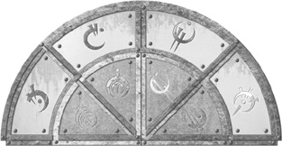
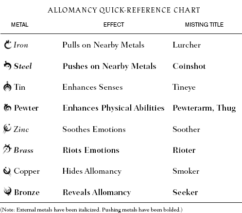

Find extensive author’s annotations of every chapter of this book, along with deleted scenes and expanded world information, at www.brandonsanderson.com.


ALLOMANCY ALPHABETICAL REFERENCE
BRASS (EXTERNAL MENTAL PUSHING METAL) A person burning brass can Riot another person’s emotions, enflaming them and making particular emotions more powerful. It does not let one read minds or even emotions. A Misting who burns brass is known as a Rioter.
BRONZE (INTERNAL MENTAL PUSHING METAL) A person burning bronze can sense when people nearby are using Allomancy. Allomancers burning metals nearby will give off “Allomantic pulses”—something like drumbeats that are audible only to a person burning bronze. A Misting who can burn bronze is known as a Seeker.
COINSHOT A Misting who can burn steel.
COPPER (INTERNAL MENTAL PULLING METAL) A person burning copper gives off an invisible cloud that protects anyone inside of it from the senses of a Seeker. While within one of these “copperclouds,” an Allomancer can burn any metal they wish, and not worry that someone will sense their Allomantic pulses by burning bronze. As a side effect, the person burning copper is themselves immune to any form of emotional Allomancy (Soothing or Rioting). A Misting who can burn copper is known as a Smoker.
LURCHER A Misting who can burn iron.
PEWTER (INTERNAL PHYSICAL PUSHING METAL) A person burning pewter enhances the physical attributes of their body. They become stronger, more durable, and more dexterous. Pewter also enhances the body’s sense of balance and ability to recover from wounds. Mistings who can burn pewter are known as both Pewterarms and Thugs.
PEWTERARM A Misting who can burn pewter.
IRON (EXTERNAL PHYSICAL PULLING METAL) A person burning iron can see translucent blue lines pointing to nearby sources of metal. The size and brightness of the line depends on the size and proximity of the metal source. All types of metal are shown, not just sources of iron. The Allomancer can then mentally yank on one of these lines to Pull that source of metal toward them. A Misting who can burn iron is known as a Lurcher.
RIOTER A Misting who can burn brass.
SEEKER A Misting who can burn bronze.
SMOKER A Misting who can burn copper.
SOOTHER A Misting who can burn zinc.
STEEL (EXTERNAL PHYSICAL PUSHING METAL) A person burning iron can see translucent blue lines pointing to nearby sources of metal. The size and brightness of the line depends on the size and proximity of the metal source. All types of metal are shown, not just sources of steel. The Allomancer can then mentally Push on one of these lines to send that source of metal away from them. A Misting who can burn steel is known as a Coinshot.
TIN (INTERNAL PHYSICAL PULLING METAL) A person burning tin gains enhanced senses. They can see farther and smell better, and their sense of touch becomes far more acute. This has the side effect of letting them pierce the mists, allowing them to see much farther at night than even their enhanced senses should have let them. A Misting who can burn tin is known as a Tineye.
TINEYE A Misting who can burn tin.
THUG A Misting who can burn pewter.
ZINC (EXTERNAL MENTAL PULLING METAL) A person burning brass can Soothe another person’s emotions, dampening them and making particular emotions less powerful. A careful Allomancer can Soothe away all emotions but a single one, essentially making a person feel exactly as they wish. Zinc, however, does not let that Allomancer read minds or even emotions. A Misting who burns zinc is known as a Soother.